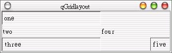
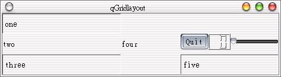

QGrid
版面配置的配置方式是比較簡單的，Widget的加入順序是由左而右、由上而下，然而有時候我們希望可以自行指定配置的位置，這時我們可以使用
QGridLayout來進行版面配置，它除了可以像QGrid的格子狀配置方式之外，還比QGrid多了額外的許多功能。
我們直接使用一個例子來作示範，QGridLayout是繼承自QLayout類別，所以我們必須先include進qlayout.h這個標頭檔，程式如下所示：
#include <qapplication.h>
#include <qlayout.h>
#include <qlabel.h>
int main(int argc, char **argv) {
QApplication app(argc, argv);
QWidget *wm = new QWidget;
QLabel *label;
QGridLayout *grid = new QGridLayout(wm, 3, 3);
grid->addColSpacing(0, 200);
grid->addColSpacing(1, 100);
label = new QLabel("one", wm);
label->setFrameStyle(QFrame::Panel + QFrame::Sunken);
grid->addWidget(label, 0, 0);
grid->addWidget(new QLabel("two", wm), 1, 0);
label = new QLabel("three", wm);
label->setFrameStyle(QFrame::Panel + QFrame::Sunken);
grid->addWidget(label, 2, 0);
grid->addWidget(new QLabel("four", wm), 1, 1);
label = new QLabel("five", wm);
label->setFrameStyle(QFrame::Panel + QFrame::Sunken);
grid->addWidget(label, 2, 2);
app.setMainWidget(wm);
wm->show();
return app.exec();
}
我們所使用的QGridLayout共有3 * 3 = 9個格子，以下我們說明其中的幾個使用到的方法。首先設定指定行的寬度，行列的索引都是由0開始，與二維陣列的指定方式相同，所以這兩行指定第0行與第1行的格子寬度：
grid->addColSpacing(0, 200);
grid->addColSpacing(1, 100);
接下來將QLabel物件加入指定的位置，在這邊是第0行第0列的格子：
grid->addWidget(label, 0, 0);
程式的執行結果如下所示：

QGridLayout除了可以用於加入Widget之外，還可以使用addLayout()方法加入其它的版面配置元件，下面這個程式是再加入一個QGridLayout的範例：
#include <qapplication.h>
#include <qlayout.h>
#include <qlabel.h>
#include <qvbox.h>
#include <qpushbutton.h>
#include <qlcdnumber.h>
#include <qslider.h>
int main(int argc, char **argv) {
QApplication app(argc, argv);
QWidget *wm = new QWidget;
QLabel *label;
QGridLayout *grid = new QGridLayout(wm, 3, 3);
QGridLayout *grid2 = new QGridLayout(wm, 2, 0);
// grid here
grid->addColSpacing(0, 200);
grid->addColSpacing(1, 100);
label = new QLabel("one", wm);
label->setFrameStyle(QFrame::Panel + QFrame::Sunken);
grid->addWidget(label, 0, 0);
grid->addWidget(new QLabel("two", wm), 1, 0);
label = new QLabel("three", wm);
label->setFrameStyle(QFrame::Panel + QFrame::Sunken);
grid->addWidget(label, 2, 0);
grid->addWidget(new QLabel("four", wm), 1, 1);
label = new QLabel("five", wm);
label->setFrameStyle(QFrame::Panel + QFrame::Sunken);
grid->addWidget(label, 2, 2);
// grid2 here
QPushButton quit("Quit", wm);
QLCDNumber lcd(2, wm);
QSlider slider(Qt::Horizontal, wm);
slider.setRange(0, 99);
slider.setValue(0);
grid2->addWidget(&quit, 0, 0);
grid2->addWidget(&lcd, 0, 1);
grid2->addWidget(&slider, 0, 2);
grid->addLayout(grid2, 1, 2);
app.setMainWidget(wm);
wm->show();
return app.exec();
}
下圖是執行的結果：

|
|